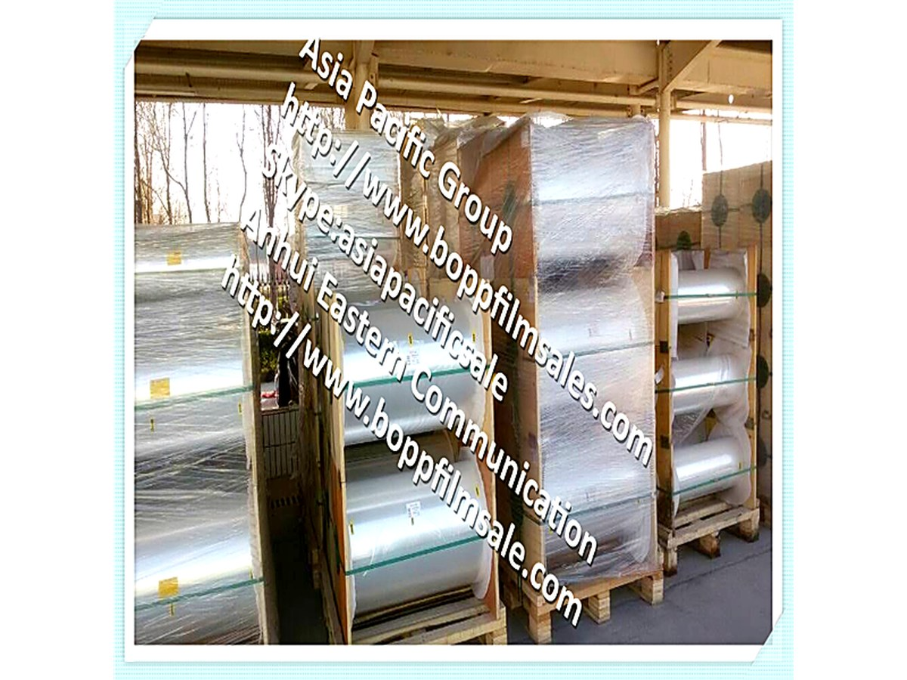

4.5 microns BOPET TTR (Thermal Transfer Ribbons) basic film series for printer ribbon
One company offer BOPET ( polyester ) thermal transfer basic film for printer ribbons products to the world market sufficiently. BOPET electronic thermal transfer basic film for printer ribbons Thickness:3-12 UM ( such as: 4.5,4.4,4.6,5.3,5.8,6.0) Width: 500,620,685,910,1010... MM.

4.5 microns BOPET TTR (Thermal Transfer Ribbons) basic film series for printer ribbon
One company offer BOPET ( polyester ) thermal transfer basic film for printer ribbons products to the world market sufficiently. BOPET electronic thermal transfer basic film for printer ribbons Thickness:3-12 UM ( such as: 4.5,4.4,4.6,5.3,5.8,6.0) Width: 500,620,685,910,1010... MM.
Product highlights
- 4.5 µm base film for ultra-thin thermal transfer ribbon
- High tensile and modulus for winding stability at high speed
- Excellent dimensional consistency for tight tolerance printing
- Low gel and low defect rate
Typical applications
- Thermal transfer ribbon film
- Super-thin label stock
- Security and marking films
Technical specifications
Key parameters taken from our production data sheet.
Overview
| Thickness | 3-12 UM ( such as: 4.5,4.4,4.6,5.3,5.8,6. |
|---|---|
| Width | 500,620,685,910,1010... MM True high technology from China mainland in BOPET plastic film and in basic film clear for wax/resin printer ribbons. The qyality relative to the length of the rolls, and we can manufacture 55,000Meters per roll and without any joints, And usually, in international market… |
Product characteristics
| Basic material | Polyester (PET) |
|---|---|
| Coating | Wax-resin coated |
| Application | Thermal transfer ribbon film; Super-thin label stock; Security and marking films |
Related products
More references in the same product family.
Request samples or a quotation
Tell us the grade, thickness and quantity you need and our team will reply with a specification and lead time.